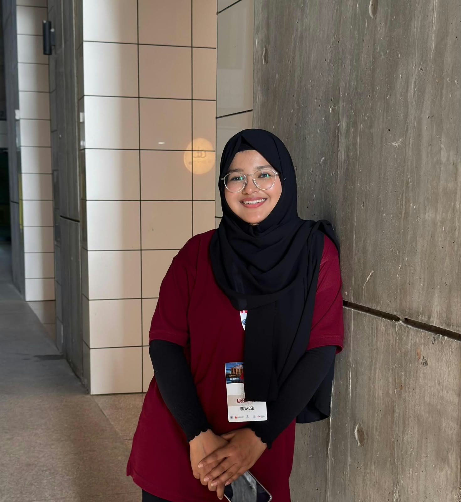

Adeeba Khan
PhD Student, Biomedical Engineering
Indian Institute of Technology Hyderabad, India
I am currently a PhD student in Biomedical Engineering at Indian Institute of Technology Hyderabad, where I work on contactless vital sign monitoring using physiology-inspired neural networks for non-invasive remote healthcare applications. Previously, I served as a Junior Research Fellow at Zakir Husain College of Engineering and Technology under the Ministry of Electronics and Information Technology’s Chip to Startup (C2S) Programme, in collaboration with International Institute of Information Technology Hyderabad and Malaviya National Institute of Technology Jaipur. I completed my BTech in Electronics from ZHCET, AMU, and my research interests include biomedical signal processing, deep learning, neurological disease prediction, and computational modeling of biological data.
- Contactless vital signs
- Physiology-inspired neural networks
- Biomedical signal processing
- Deep learning
- Neurological disease prediction
- Computational modeling